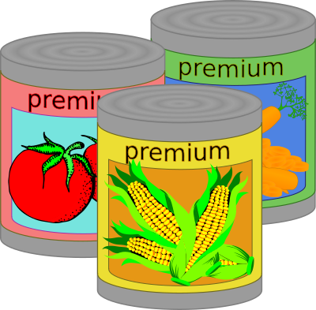
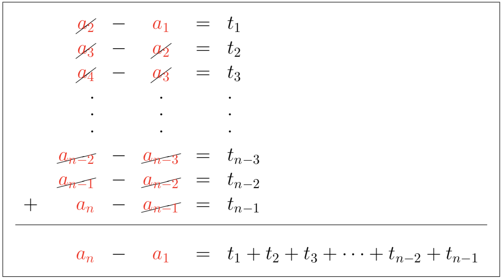

Problem
Bryn observed a real need in her community for canned food at the local food bank. On April 15, she decided to start a canned food drive, and hoped to collect \(4000\) cans of food by the end of June. She posted flyers and spread the word. She made the following observations.
| Day Number | Total Number of Cans Collected Since Beginning of Drive | Increase from Previous Day |
|---|---|---|
| \(1\) | \(2\) | |
| \(2\) | \(5\) | \(3\) |
| \(3\) | \(12\) | \(7\) |
| \(4\) | \(23\) | \(11\) |
| \(5\) | \(38\) | \(15\) |
Bryn noticed that the increases from one day to the next form an arithmetic sequence with first term \(3\) and common difference \(4\). (An arithmetic sequence is a sequence in which each term after the first is obtained from the previous term by adding a constant. For example, \(3,5,7,9\) is an arithmetic sequence with four terms and common difference \(2\).)
Assuming that the pattern of daily increases continues, how many days would it take to collect at least \(4000\) cans of food?

The following information may be helpful in solving the problem.
The sequence \(3,5,7,9\) is an arithmetic sequence with four terms and common difference \(2\). The term in position \(n\) is denoted \(t_n\). For example, we say that \(t_1=3\). The subscript \(1\) is the position of the term in the sequence and \(3\) is the value of the term.
The general term of an arithmetic sequence is \(t_n=a+(n-1)d\), where \(a\) is the first term, \(d\) is the common difference, and \(n\) is the term number.
The sum, \(S_n\), of the first \(n\) terms of an arithmetic sequence can be found using either \(S_n=\dfrac{n}{2}\left(2a+(n-1)d\right)\) or \(S_n=n\left(\dfrac{t_1+t_n}{2}\right)\), where \(t_1\) is the first term of the sequence and \(t_n\) is the \(n^{th}\) term of the sequence.
For example, for the arithmetic sequence \(3,5,7,9\), we have \(a=t_1=3\), \(d=2\), \(t_4=9\), and \(S_4=3+5+7+9=24\).
Also, \[\begin{aligned} \dfrac{4}{2}\left(2a+(4-1)d\right)&=\dfrac{4}{2}\left(2(3)+(4-1)2\right)\\ &=2\left(12\right)\\ &=24\\ &=S_4\end{aligned}\] And, \[\begin{aligned} 4\left(\dfrac{t_1+t_4}{2}\right) &=4\left(\dfrac{3+9}{2}\right)\\ &=4(6)\\ &=24\\ &=S_4\end{aligned}\]
Solution
Solution 1
On day \(i\), let the total number of cans collected since the beginning of the drive be \(a_i\). That is, \(a_1=2\), \(a_2=5\), \(a_3=12\), \(a_4=23\), and \(a_5 = 38\). We want to determine the day number, \(n\), so that \(a_n\geq 4000\).
Let the arithmetic sequence of the increases from day to day be \(t_1, t_2, t_3, \ldots, t_n,\ldots\).
Then \(t_1=a_2-a_1=5-2=3\), \(t_2=a_3-a_2=12-5=7\), \(t_3=a_4-a_3=23-12=11\), and \(t_4=a_5-a_4=38-23=15\). This sequence of increases is arithmetic, with common difference \(d=t_2-t_1=7-3=4\). To determine \(t_5\), we add the common difference \(4\) to \(t_4\). So \(t_5=t_4+4=15+4=19\). Then \(a_6=a_5+t_5=38+19=57\). This means that the total number of cans on day \(6\) is \(57\). We could continue generating these increases and number of cans on the next day until the goal is reached.
Let’s take a closer look at the number of cans. \[\begin{aligned} a_1&=2\\ a_2&=a_1+t_1=2+3=5\\ a_3&=a_2+t_2=2+3+7=12\\ a_4&=a_3+t_3=2+3+7+11=23\\ a_5&=a_4+t_4=2+3+7+11+15=38\\ a_6&=a_5+t_5=2+3+7+11+15+19=57\end{aligned}\]
We can present the information in a table.
| Day Number \(n\) |
Total Number of Cans \(a_n\) |
Daily Increase \(t_n\) |
Difference of the Daily Increase \(d\) |
|---|---|---|---|
| 1 | 2 | 3 | |
| 2 | 5 | 7 | 4 |
| 3 | 12 | 11 | 4 |
| 4 | 23 | 15 | 4 |
| 5 | 38 | 19 | 4 |
| 6 | 57 |
Since the second difference is constant, we can represent the general term of the sequence of total cans with a quadratic function in \(n\). Let \(a_n=pn^2+qn+r\), where \(p, q, r\) are constants.
For \(n=1\), \(a_1=2=p(1)^2+q(1)+r\). Therefore, \(p+ q+r=2\).(1)
For \(n=2\), \(a_2=5=p(2)^2+q(2)+r\). Therefore, \(4p+2q+r=5\).(2)
For \(n=3\), \(a_3=12=p(3)^2+q(3)+r\). Therefore, \(9p+3q+r=12\).(3)
Subtracting (1) from (2), \(3p+q=3\).(4)
Subtracting (2) from (3), \(5p+q=7\).(5)
Subtracting (4) from (5), \(2p=4\) and \(p=2\) follows.
Substituting \(p=2\) into (4), \(3(2)+q=3\) and \(q=-3\) follows.
Substituting \(p=2,\ q=-3\) into (1), \(2-3+r=2\) and \(r=3\) follows.
Therefore, \(a_n=2n^2-3n+3\) is the general term of the sequence of total cans, in terms of \(n\).
We want to find the value of \(n\) so that \(2n^2-3n+3\geq 4000\). We will do so by first solving \(2n^2-3n+3 = 4000\) for \(n\). Rearranging the equation, we obtain \(2n^2-3n-3997 = 0\). Using the quadratic formula, \(n \approx -43.96\) or \(n \approx 45.46\). Since \(n\) is the day number, \(n>0\). Therefore, \(n \approx 45.46\), and it follows that on day 46 there would be over \(4000\) cans collected in total.
If we check when \(n=45\), \(a_{45}=3918\) cans, which is under the goal.
When \(n=46\), \(a_{46}=4097\) cans and the goal is achieved. Therefore, it would take \(46\) days to collect at least \(4000\) cans of food. There are over \(46\) days from April 15 to the end of June, so it is possible to achieve the goal if the pattern continues.
Two more solutions follow.
Solution 2
As in Solution 1, on day \(i\), let the total number of cans collected since the beginning of the drive be \(a_i\) and let the sequence of daily increases be \(t_1, t_2, t_3, \ldots, t_n,\ldots\). Then \(t_1=a_2-a_1=3\) and \(\ t_2=a_3-a_2=7\). Since the sequence of daily increases is arithmetic, the constant difference is \(d=7-3=4\). We can generate more terms: \(t_3=11\), \(t_4=15\), \(t_5=19,~\ldots\).
Each term in the sequence of daily increases is the difference between consecutive terms of the original sequence, so we get the following equations.
\[\begin{aligned} a_{2} - a_{1} & = t_{1} \\ a_{3} - a_{2} & = t_{2} \\ a_{4} - a_{3} & = t_{3} \end{aligned}\] and so on, ending with \[\begin{aligned} a_{n-2} - a_{n-3} & = t_{n-3} \\ a_{n-1} - a_{n-2} & = t_{n-2} \\ a_{n} - a_{n-1} & = t_{n-1} \end{aligned}\]
Adding these equations, we get \[a_{n} - a_{1} = t_1+t_2+t_3+\cdots +t_{n-2}+t_{n-1}=S_{n-1} \quad (1)\] as illustrated below.

To find the sum \(S_{n-1}=t_1+t_2+t_3+ \cdots +t_{n-2}+t_{n-1}\) we can use the formula \(S_n=\dfrac{n}{2}[2a+(n-1)d]\) with \(a=3\) and \(d=4\) for \((n-1)\) terms. So \[\begin{aligned} S_{n-1}&=t_1+t_2+t_3+ \cdots +t_{n-2}+t_{n-1}\\ &=\dfrac{n-1}{2}[2a+((n-1)-1)d]\\ &=\dfrac{n-1}{2}[2(3)+((n-1)-1)(4)]\\ &=\dfrac{n-1}{2}[6+(n-2)(4)]\\ &=\dfrac{n-1}{2}[6+4n-8]\\ &=\dfrac{n-1}{2}[4n-2]\\ &=(n-1)(2n-1)\end{aligned}\]
From (1), \(a_n-a_1=S_{n-1}\), so \(a_n=S_{n-1}+a_1=(n-1)(2n-1)+2=2n^2-3n+3\).
Therefore, \(a_n=2n^2-3n+3\) is the general term of the sequence of total cans, in terms of \(n\).
Then, as in Solution 1, we would find the value of \(n\) so that \(2n^2-3n+3\geq 4000\). Without repeating the work here, we find that it would take \(46\) days to collect at least \(4000\) cans of food.
Solution 3
As in Solution 1, on day \(i\), let the total number of cans collected since the beginning of the drive be \(a_i\) and let the sequence of daily increases be \(t_1, t_2, t_3, \ldots , t_n, \ldots\). Then \(t_1=a_2-a_1=3\) and \(t_2=a_3-a_2=7\). Since the sequence of daily increases is arithmetic, the constant difference is \(d=7-3=4\). Using the formula for the general term of an arithmetic sequence, \(t_n=a+(n-1)d\), the general term of the sequence of increases is \(t_n=3+(n-1)(4)=3+4n-4=4n-1\).
To generate the sequence of total cans, we start with the first term and add more terms from the arithmetic sequence of daily increases. For example, \[\begin{aligned} a_1&=2\\ a_2&=2+t_1=2+[4(1)-1]=2+3=5\\ a_3&=2+t_1+t_2=2+[4(1)-1]+[4(2)-1]=2+3+7=12\end{aligned}\]
So, \[\begin{aligned} a_n&=2+t_1+t_2+t_3+\ \cdots \ +t_{n-1}\\ &=2+[4(1)-1]+[4(2)-1]+[4(3)-1]+\ \cdots \ +[4(n-1)-1]\\ &=2+[4(1)+4(2)+4(3)+\ \cdots \ +4(n-1)]+(n-1)(-1)\\ &=2+4[1+2+3+\ \cdots \ +(n-1)]-n+1\\ &=3-n+4\left[\frac{(n-1)(n)}{2}\right]\quad \quad (1)\\ &=3-n+2(n^2-n)\\ &=3-n+2n^2-2n\\ &=2n^2-3n+3\end{aligned}\]
An explanation is provided here to show how (1) is obtained.
Notice that \(1+2+3+ \cdots +(n-1)\) is an arithmetic sequence with (\(n-1\)) terms, first term \(b_1=1\), and last term \(b_{n-1}=(n-1)\). Using the formula for the sum of the terms of an arithmetic sequence, \(S_n=n\left(\dfrac{b_1+b_n}{2}\right)\), we obtain \[S_{n-1}=(n-1)\left(\dfrac{1+(n-1)}{2}\right)=(n-1)\left(\dfrac{n}{2}\right)=\dfrac{(n-1)(n)}{2}\]
Therefore, \(a_n=2n^2-3n+3\) is the general term of the sequence of total cans, in terms of \(n\).
Then, as in Solution 1, we would find the value of \(n\) so that \(2n^2-3n+3\geq 4000\). Without repeating the work here, we find that it would take \(46\) days to collect at least \(4000\) cans of food.